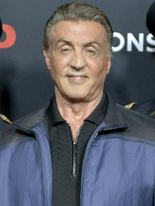
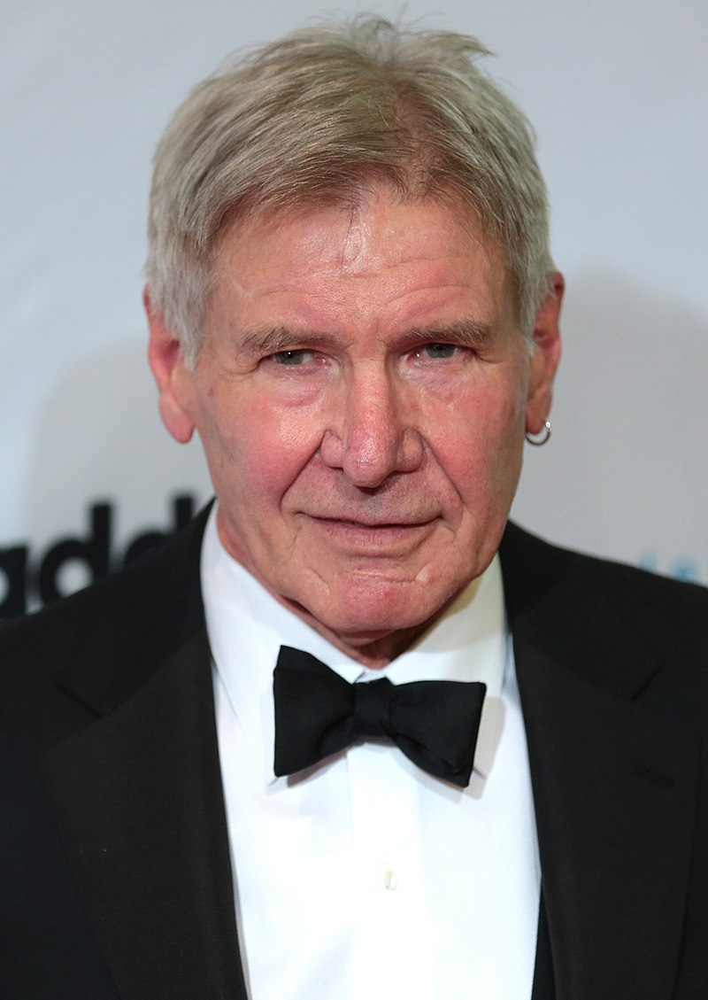

Киа́ну Чарльз Ривз (англ. Keanu Charles Reeves, [kiˈɑːnuː]; род. 2 сентября 1964[3], Бейрут, Ливан) — канадский[a] актёр, кинорежиссёр, кинопродюсер и музыкант (бас-гитарист). Наиболее известен своими ролями в киносериях «Билл и Тед» (англ.)рус. (1989—2020), «Матрица» (1999—2021) и «Джон Уик» (с 2014), а также в фильмах «На гребне волны» (1991), «Мой личный штат Айдахо» (1991), «Дракула» (1992), «Скорость» (1994), «Джонни-мнемоник» (1995), «Адвокат дьявола» (1997), «Константин: Повелитель тьмы» (2005), «Короли улиц» (2008) и «47 ронинов» (2013). Ривз работал с такими известными кинорежиссёрами, как Стивен Фрирз («Опасные связи», 1988), Гас Ван Сент («Мой личный штат Айдахо», 1991), Фрэнсис Форд Коппола («Дракула», 1992) и Бернардо Бертолуччи («Маленький Будда», 1993). В 2013 году сам дебютировал в качестве режиссёра, сняв фильм о боевых искусствах «Мастер тай-цзи». Ссылаясь на его игру в фильме «На гребне волны» (1991), критик газеты The New York Times Джанет Маслин хвалит актёрскую многосторонность Ривза, говоря, что он «проявляет значительную дисциплину и диапазон. Он легко перемещается между выдержанным поведением, подходящим для полицейско-процедурной истории, и гибкой манерой его комических ролей»[5]. 31 января 2005 года Киану Ривз получил звезду на голливудской «Аллее славы»[6]. Является самым высокооплачиваемым актёром (англ.)рус. в истории кинематографа по соотношению суммы разового гонорара к совокупной сумме заработка ($30 к $156 млн).
Майкл Сильве́стр Гарденцио Сталло́не (англ. Michael Sylvester Gardenzio Stallone /stəˈloʊn/; итал. [ɡarˈdɛntsjo stalˈloːne]; род. 6 июля 1946, Нью-Йорк, США) — американский актёр, кинорежиссёр, сценарист и продюсер. За свою актёрскую карьеру снялся более чем в 50 фильмах, в том числе в сериях «Рокки» (1976—2018), «Рэмбо» (1982—2019), «Неудержимые» (2010—н. в.) и «План побега» (англ.)рус. (2013—2019), к первым трём из которых также приложил руку в качестве сценариста, режиссёра и продюсера. Номинант на премию «Золотой глобус» за роль Рокки Бальбоа в первом фильме и лауреат за роль в седьмом фильме серии. Трёхкратный номинант на премию «Оскар» за роль Рокки Бальбоа в первом и седьмом фильмах, а также за сценарий к первому фильму, лауреат премий «Сатурн», «Сезар» и «Critics’ Choice Movie Awards». По результатам на 2012 год общая касса фильмов со Сталлоне в качестве актёра составила 3,7 миллиарда долларов (с поправкой на инфляцию)[1]. 12 июня 2011 года за заслуги в популяризации бокса был введён в Международный зал боксёрской славы[2]. В декабре 2016 года избранный президент США Дональд Трамп предложил Сталлоне пост председателя Национального фонда искусств и гуманитарных наук, но тот отказался[3].
Ха́ррисон Форд (англ. Harrison Ford; род. 13 июля 1942[1][2][…], Чикаго, Иллинойс) — американский актёр кино и телевидения, продюсер. Номинант на премию «Оскар», BAFTA, четырёхкратный номинант и обладатель специальной премии «Золотой глобус», почётной «Золотой пальмовой ветви», а также почётного «Сезара». Наиболее известен по участию в серии фильмов «Звёздные войны» (ролью Хана Соло), «Индиана Джонс» (заглавной ролью), и дилогии «Бегущий по лезвию» (ролью Рика Декарда), а также по фильмам «Игры патриотов», «Беглец», «Самолёт президента», «К-19» и «Свидетель».